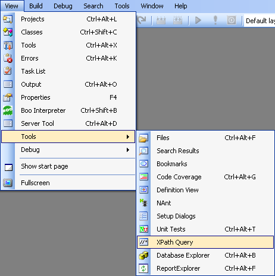
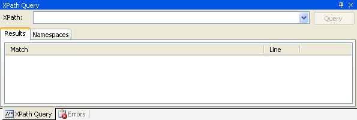
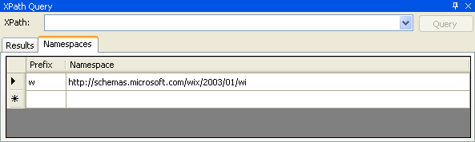
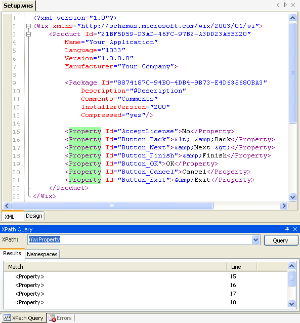
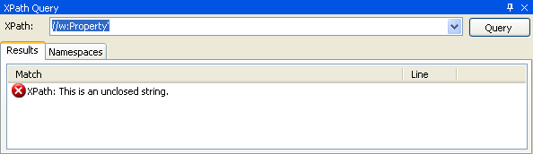
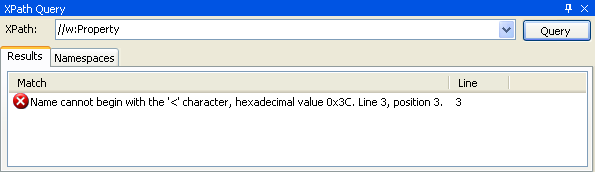
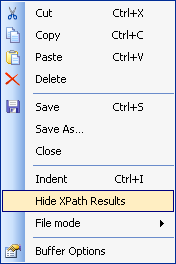

SharpDevelop 2.1 now has an XPath Query window where you can run an XPath query on the active XML document and the matched nodes will be highlighted.
Open an XML document in SharpDevelop. For this walkthrough I am going to use the following WiX document.
<?xml version="1.0"?>
<Wix xmlns="http://schemas.microsoft.com/wix/2003/01/wi">
<Product Id="21BF5D59-D3AD-46FC-97B2-A3DD23A5BE20"
Name="Your Application"
Language="1033"
Version="1.0.0.0"
Manufacturer="Your Company">
<Package Id="8874187C-94B0-4DB4-9B73-E4D635680BA3"
Description="#Description"
Comments="Comments"
InstallerVersion="200"
Compressed="yes"/>
<Property Id="AcceptLicense">No</Property>
<Property Id="Button_Back">< &Back</Property>
<Property Id="Button_Next">&Next ></Property>
<Property Id="Button_Finish">&Finish</Property>
<Property Id="Button_OK">OK</Property>
<Property Id="Button_Cancel">Cancel</Property>
<Property Id="Button_Exit">&Exit</Property>
</Product>
</Wix>
From the View menu, select Tools and then select XPath Query.

This opens the XPath Query window.

If your XML document has any namespaces that you need to refer to in the XPath query you can add them to the Namespaces tab. In the image below the WiX namespace has been entered along with a prefix.

The prefix cannot be an empty string even for an XML document that does not use explicitly use a namespace prefix (e.g. like the WiX document we are currently using).
Type in your query into the XPath text box and then either click the Query button or press the return key to execute the query and show the results. The results are displayed as a list in the XPath Query window and the corresponding nodes in the XML document are highlighted.

Double clicking a row in the Results list will jump to the corresponding XML line and sets focus back to the XML Editor. Single clicking a row will cause the XML Editor to scroll to the matched node.
If the XPath you typed in has an error this information is displayed in the Results list when you try to execute the query.

Any errors in the XML document are also displayed in the Results list when you attempt to execute the query.

To remove the highlighting in the XML document, right click the document and select Hide XPath Results.

If you want to do same thing in Visual Studio 2005 then take a look at XPathmania created by Don Demsak.